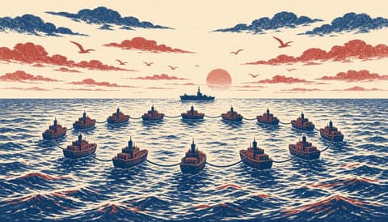
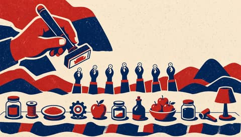
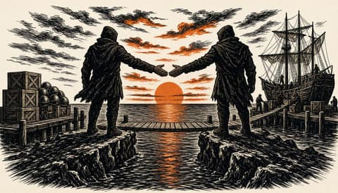
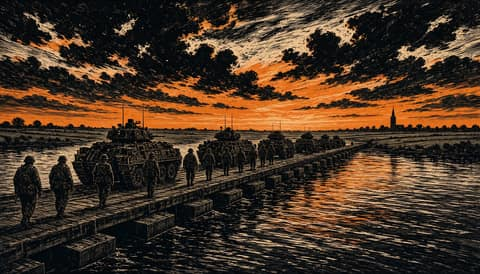
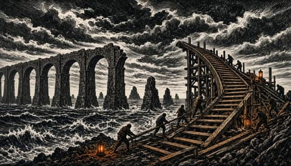
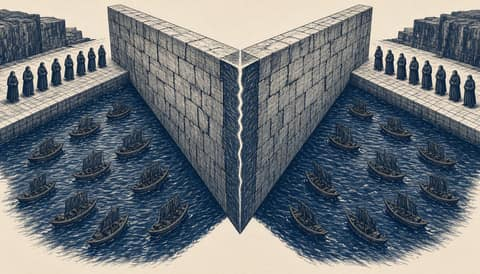
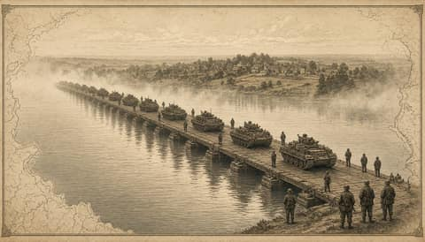
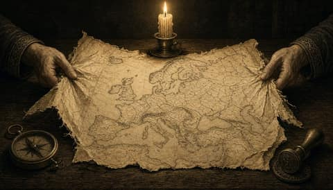

Europae Laeva
One Europe, for the many.

Ten northern navies to sign North Atlantic pact without the US
Voters punished the man who taxed their prices. Europe must answer tariffs with one voice- Meta, Google and TikTok sue to block California ban on addictive feeds for under-16s
- Belgrade judge detains special police commander on torture suspicion
- House vote looms on impeaching US defence secretary Pete Hegseth over Iran war
The Harbour Ledger
News from the quay up.
 Hackers say stolen Rosstat data shows 450,100 Russian military deaths
Hackers say stolen Rosstat data shows 450,100 Russian military deaths Ten northern European countries to run their navies as one force
Ten northern European countries to run their navies as one force
EU and Canada launch Alliance for the Future, covering security- French minister accuses Mélenchon of speaking for the Kremlin over Donbas vote
- Colau plans 2% tax on wealth over a million euros
Attacotti
Scotland's way home runs through Europe.

Europa Surgit
Europe is rising. Keep up.
 Ten northern European nations sign pact to swap parts, ammunition and crews
Ten northern European nations sign pact to swap parts, ammunition and crews EU and Canada launch Alliance for the Future with defence deal
EU and Canada launch Alliance for the Future with defence deal- Hoarded homes are a European failure, not a Spanish one
- Parliament to vote in December on proposed pesticide Omnibus
- Commission proposes secret 2027 solidarity pool as EU relocations fall short
Nuntii Europae
News from a European perspective.
 Ten northern European nations sign pact to pool their naval forces against Russia
Ten northern European nations sign pact to pool their naval forces against Russia Six reported dead and 16 wounded after man opens fire on Krakow's Main Market Square
Six reported dead and 16 wounded after man opens fire on Krakow's Main Market Square One Polish court now has two managements and neither has given way
One Polish court now has two managements and neither has given way Nobody in Washington will pay for Europe's defence
Nobody in Washington will pay for Europe's defence- Dutch security report says AI now used at every stage of cyber attacks
Nuntii Batavi
The Netherlands, between The Hague and Brussels.


Leo Batavus
The Netherlands decides.
 Ten JEF countries to sign naval partnership pact on 10 November
Ten JEF countries to sign naval partnership pact on 10 November Hackers use AI in every attack phase, NCTV warns
Hackers use AI in every attack phase, NCTV warns Meta, Google and TikTok sue to block California ban on teen feeds
Meta, Google and TikTok sue to block California ban on teen feeds
German brigade drills in Lithuania with Dutch troops ahead of 2027 stationing
Washington's troops are a bonus, not a plan
Europae Dexter
A sovereign Europe, argued plainly.
 EU and Canada launch Alliance for the Future as Canada joins EU defence procurement scheme
EU and Canada launch Alliance for the Future as Canada joins EU defence procurement scheme- Kallas says Europe will refuse to implement any Ukraine deal it did not join
- Congress moves to impeach Hegseth as Trump defends his secretary over Iran war

Iraq proposes regional ministers' committee as oil losses pass $60bn in US-Iran war- Belgrade court detains police commander over garage torture case
Europa Patriarum
A Europe of nations.
 Ten northern countries sign naval partnership pact led from Britain's Northwood
Ten northern countries sign naval partnership pact led from Britain's Northwood Seven parliaments legislating is not fragmentation. It is consent
Seven parliaments legislating is not fragmentation. It is consent American law binds no president. National law must bind Europe's defence.
American law binds no president. National law must bind Europe's defence.
Germany runs two exercises in Lithuania under new defence declaration
Darmanin says Le Pen or Mélenchon as president would end Europe as it exists